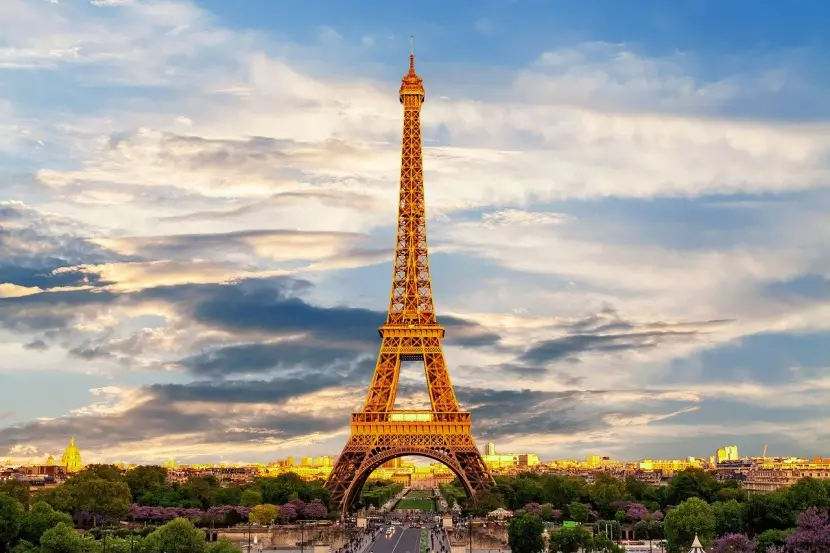

Paryż

Paryż znany jest jako miasto miłości, pięknej architektury, sztuki i wyśmienitej kuchni. Każdego roku przyciąga miliony turystów swoimi największymi atrakcjami, takimi jak Luwr, które plasują się w ścisłej światowej czołówce. Jednocześnie jest miejscem pełnym kontrastów, czasem przytłaczającym, które jednak nigdy nie pozwala się nudzić.